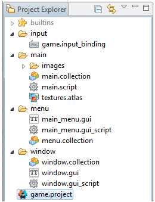
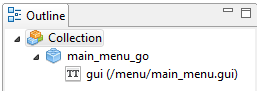
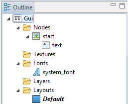
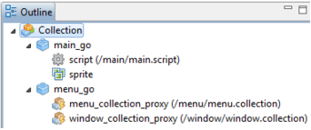

Прокси коллекции меню и окно будут созданы динамически
   Основная коллекция main  |
Окно меню должко показывать окно сообщения при этом теряя фокус передавая его окну сообщения. Файл: main_menu.gui_script function init(self) msg.post(".", "acquire_input_focus") -- получаем фокус end function on_message(self, message_id, message, sender) if message_id == hash("focus_off") then msg.post(".", "release_input_focus") -- теряем фокус elseif message_id == hash("focus_on") then msg.post(".", "acquire_input_focus") -- получаем фокус end end function on_input(self, action_id, action) if action_id == hash("touch") and action.pressed then local start = gui.get_node("start") -- ссылка на кнопку старт if gui.pick_node(start, action.x, action.y) then msg.post("main:/main_go#script", "show_window") -- показать окно end end end Окно сообщения при закрытии теряет покус возвращая его в окно меню. Файл: window.gui_script function init(self) msg.post(".", "acquire_input_focus") -- получаем фокус end function on_message(self, message_id, message, sender) if message_id == hash("focus_off") then msg.post(".", "release_input_focus") -- теряем фокус elseif message_id == hash("focus_on") then msg.post(".", "acquire_input_focus") -- получаем фокус end end function on_input(self, action_id, action) if action_id == hash("touch") and action.pressed then local start = gui.get_node("start") -- ссылка на кнопку старт if gui.pick_node(start, action.x, action.y) then msg.post("main:/main_go#script", "hide_window") -- закрыть окно end end end Основная коллекция main объединяет обе прокси коллецкии и динамически создаёт их. Файл: main.script function init(self) msg.post("#", "create_menu") -- сообщение для текущего скрипта end function on_message(self, message_id, message, sender) if message_id == hash("create_menu") then msg.post("menu_go#menu_collection_proxy", "load") --загружаем прокси коллекцию
elseif message_id == hash("proxy_loaded") and sender.fragment == hash("menu_collection_proxy") then -- если прокси коллекция загружена -- инициализируем и включаем загруженную прокси коллекцию. msg.post(sender, "init") -- инициализация загруженной прокси коллекции msg.post(sender, "enable") -- включение загруженной прокси коллекции msg.post(sender, "acquire_input_focus") -- передаём фокус в загруженную коллекцию elseif message_id == hash("proxy_loaded") and sender.fragment == hash("window_collection_proxy") then -- если прокси коллекция загружена msg.post(sender, "init") -- инициализация загруженной прокси коллекции
elseif message_id == hash("show_window") then msg.post("menu_collection:/main_menu_go#gui", "focus_off") -- отключаем фокус msg.post("window_collection:/window_go#gui", "focus_on") -- включаем фокус msg.post("main:/menu_go#window_collection_proxy", "enable") -- включаем коллекцию
elseif message_id == hash("hide_window") then msg.post("menu_collection:/main_menu_go#gui", "focus_on") -- включаем фокус msg.post("window_collection:/window_go#gui", "focus_off") -- отключаем фокус msg.post("main:/menu_go#window_collection_proxy", "disable") -- отключаем коллекцию end end |
Created with the Personal Edition of HelpNDoc: Free help authoring environment